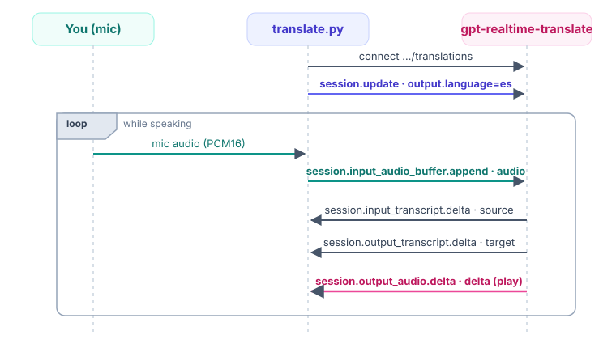

Voice Agents · Module 04
Speak one language, hear another, in real time
The one idea
A dedicated session does the whole job: detect, translate, speak. You never ask it for a turn, and every event name wears a session. prefix.
The playing field
| Concept | What it does | When it matters |
|---|---|---|
| Translation endpoint | /realtime/translations | The very first line |
| output.language | The one setting: target | In your session.update |
| Auto source | Detects what you speak | You set no input language |
| session. prefix | Every event name | Send and receive |
| delta carries audio | Bytes in event["delta"] | Decode and play |
| No response.create | Streams on its own | Unlike the assistant |
Each row is a place the API bites if you assume it works like Module 03. The Caution slides mark every one.
Concept 1 · A dedicated endpoint
TRANSLATE_URL = (
"wss://api.openai.com/v1/realtime/translations"
"?model=gpt-realtime-translate"
)
# wss:// secure WebSocket (a two-way phone call)
# /translations THIS path makes it a translation session
# ?model=... 70+ input languages, 13 output languages/realtime?... plus session.type. Translation is a different endpoint: /realtime/translations. Reuse the old URL and the session. events below never arrive.Concept 1 · Opening the call
import websocket # the "websocket-client" package
headers = [f"Authorization: Bearer {api_key}"]
ws = websocket.WebSocketApp(
TRANSLATE_URL,
header=headers,
on_open=self._on_open, # once, on connect
on_message=self._on_message, # every server event
on_close=self._on_close,
)
ws.run_forever() # blocks; delivers to callbacksOpenAI-Beta header at GA. Send only Authorization.run_forever() blocks, so the mic runs on its own thread.Concept 2 · Configure the session
session_update = {
"type": "session.update",
"session": {
"audio": {
"input": {
"format": {"type": "audio/pcm",
"rate": 24000},
},
"output": {
"format": {"type": "audio/pcm",
"rate": 24000},
"language": "es", # THE one knob
},
},
},
}output.language is the entire difference that turns your voice into translated voice.Concept 2 · The numbers
output.language.LANGUAGE_CODES = {
"spanish": "es", "french": "fr",
"japanese": "ja", "arabic": "ar",
# ...13 total. "es" or "Spanish" both work.
}error event. Common targets include Spanish, French, Japanese, and Arabic; the LANGUAGE_CODES map wires up friendly names. Trust the server, not a memorized list.Concept 3 · Stream the mic
b64 = base64.b64encode(chunk).decode("ascii")
event = {
"type": "session.input_audio_buffer.append",
"audio": b64, # OUTGOING bytes go in "audio"
}
ws.send(json.dumps(event))
# ~50 ms per chunk: 24000 * 0.05 = 1200 samplessession. prefix is easy to miss. Send the unprefixed name and the server ignores your audio: no error, just silence.Concept 4 · Two threads
A thread-safe queue.Queue is the hand-off. Producer/consumer: audio callbacks must be fast, so no network work happens on the mic thread. The same shape powers Module 05.
Concept 5 · Read the replies
def _on_message(self, ws, message):
event = json.loads(message)
etype = event.get("type", "")
if etype == "session.input_transcript.delta": # source text
self._print_delta("source", "YOU (source):", event.get("delta", ""))
elif etype == "session.output_transcript.delta": # target text
self._print_delta("target", "TRANSLATION:", event.get("delta", ""))
elif etype == "session.output_audio.delta": # translated speech
pcm = base64.b64decode(event["delta"]) # bytes in "delta"!
self.speaker_stream.write(pcm) # play immediatelySource text, target text, and translated audio all arrive as session.* delta events.
The gotcha to memorize
delta, not audioevent["audio"]event["delta"]# WRONG on the incoming event:
event["audio"] # KeyError / silence
# RIGHT:
base64.b64decode(event["delta"])session.output_audio.delta. A frequent wrong guess is response.audio.delta (does not exist) or session.audio.delta. Hearing nothing? Print etype for every message and confirm the exact string.Concept 6 · Playing audio back
self.speaker_stream = sd.RawOutputStream(
samplerate=24000, channels=1, dtype="int16"
)
self.speaker_stream.start()
# ...per audio delta:
self.speaker_stream.write(audio_bytes)RawOutputStream takes raw PCM16 bytes, exactly what b64decode returns.Ctrl+C: stop and close both streams in finally: to free the hardware.Concept 7 · The missing loop
response.create: it just streamsresponse.create on a translation socket. There is no request/response turn to trigger. Assistant-style events here just produce errors.The whole exchange

Audio goes up in audio, and comes back down in delta. That asymmetry is the detail to memorize.
Try it
cd topics/voice_agents/04_translation
uv sync # build the .venv
uv run python src/translate.py --to Spanish # speak; hear Spanish
# no --to? it asks you. names OR codes work: Japanese / ja
# wrong device? uv run python src/translate.py --list-devices
# Ctrl+C stops cleanly and frees the audio hardwareYour words appear (source), the translation appears right after (target), and you hear the translated speech, all within a fraction of a second.
Transcription vs Translation
| Module 03 · Transcription | Module 04 · Translation | |
|---|---|---|
| Endpoint | /realtime + session.type | /realtime/translations |
| Event names | plain | session.-prefixed |
| Send audio | input_audio_buffer.append | session.input_audio_buffer.append |
| Get audio back | no (text only) | session.output_audio.delta |
| Audio field in | n/a | event["delta"] (not "audio") |
| You configure | transcription model | output.language |
Same mic, same PCM16 @ 24 kHz, same two-thread shape. The protocol is what shifts.
What you learned
event["audio"], receive it in event["delta"]. There is no response.create loop. Miss the session. prefix and you get silence, not an error.The one idea to remember
session. on every event; incoming audio in delta, not audio.
Next: Module 05, a full speech-to-speech assistant. · src/translate.py